This project focused on designing a blooming flower that could deform pnuematically in a controlled way to mimic a real flower, rather than
previously design blooming flower mechanical systems such as a scotch and yoke deisgn.
Rather than being purely theoretical, the project required building a physical prototype and comparing experimental behavior to theoretical predictions.
Course: Design of Morphing Materials and Mechanisms
Project Partners: Tyler Ho, Yuka Iwashita, Ryan Lee
The goal of this project was to design a structure that could undergo controlled deformation while maintaining the geometric integrity of real flower petals opening and closing. Experimental research into achieving organic, fluid blooming motion to the development of thin-formed vacuum-powered artificial muscles.
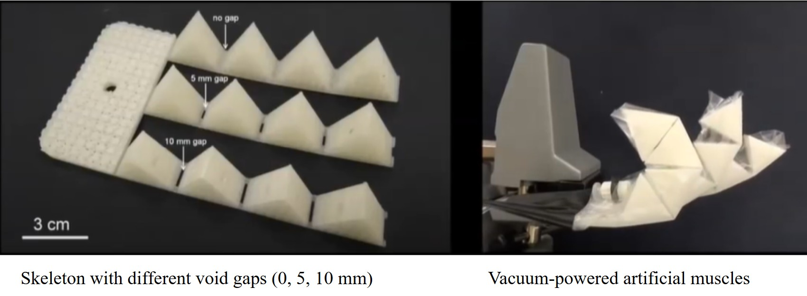
This was then implemented into a physical product as a visual alarm, to be used by those who require more than auditory stimulation to wake up. The alarm provides a strobe light stimulus to the user by opening and closing its petals to mechanically dim and expose LED lights when it recognizes an auditory alarm.
The initial idea for the morphing actuation used two flexible silicone sheets glued together to create a sealed space for air along the blue tape. The silicone was attached to 3D printed petal pieces held together with a compliant backing so that the air would inflate the space between the petal pieces and make the petal bloom. However, when the silicone was inflated with air, it was too thin to push open the petal (inscreasing pressure meant bursting the silicone).
We made thicker silicone sheets for the next iteration to create a tube for air and had a balloon attached to the petal pieces and the tube. Upon inflation, the balloon should have expanded and induced rotation between the petal halves, functioning as a soft hinge. The air was able to flow through the tube to the balloon without expanding the tube, but the balloon inflated in all directions and was not strong enough to push the petal piece.
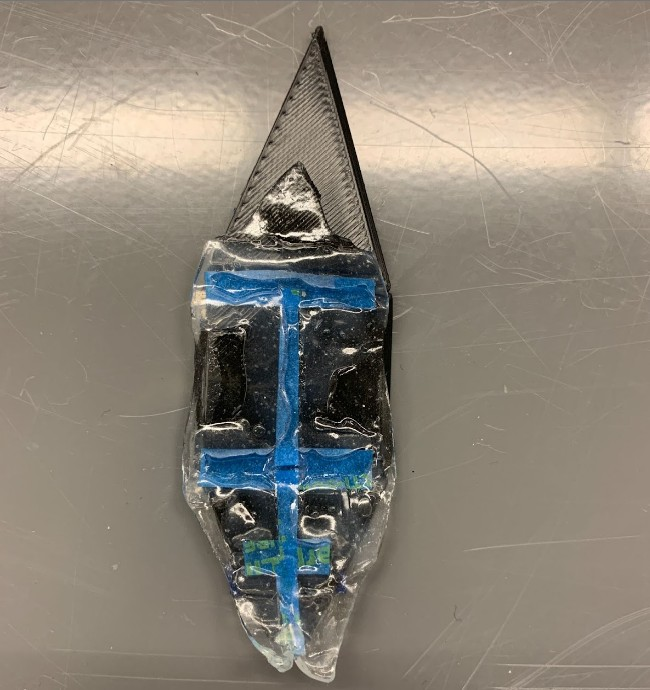
As a result, subsequent prototypes focused on understanding how hinge geometry and balloon configuration influence petal motion. Several variants were constructed to test different hinge angles and balloon attachment strategies. Further prototypes integrated fabric layers to better constrain balloon expansion and shape the resulting motion
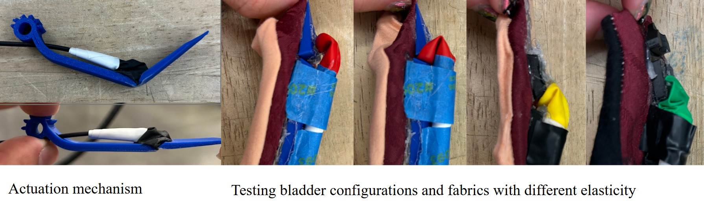
Our final configurations enabled large actuation, but the balloon expanded rapidly and uncontrollably, transitioning quickly from a minimally actuated state to a fully inflated state. This resulted in a bloated appearance that deviated from the desired petal-like curvature.
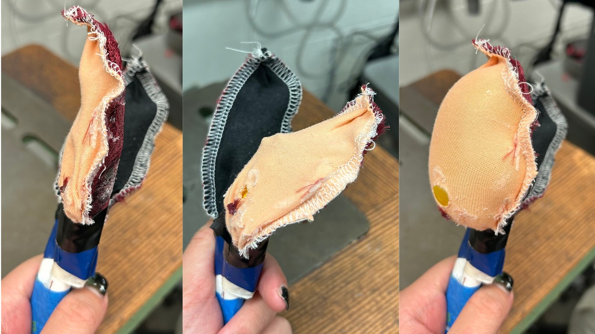
Through additional testing, we improved control over balloon expansion, but the inflated petal still exhibited a rounded, bloated appearance rather
than the slender, tapered curvature characteristic of natural petals. The volume of the balloon required to achieve sufficient bending resulted in
outward bulging, producing limited visual differentiation between intermediate and fully actuated states.
Due to this mismatch between actuation behavior and the desired aesthetic outcome, we ultimately pivoted away from this design direction.
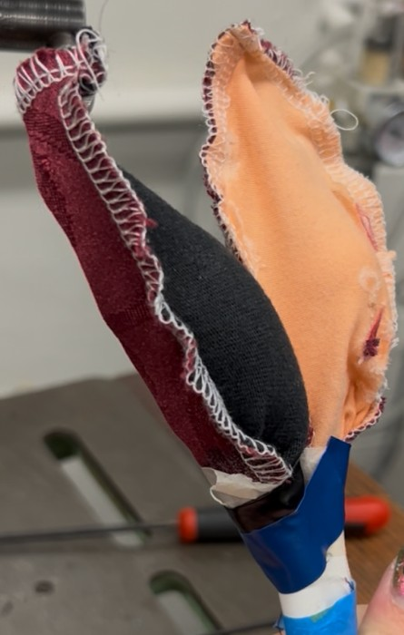
A second alternative method explored was adding a diamond shape to the center of a sealed bladder to produce L-shaped bending. This technique was also not used because of implementation complications and a bloated, undesirable appearance.
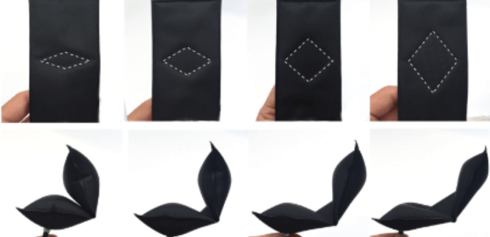
We decided that in order to avoid a bloated appearance, we could morph the petal by pulling a vacuum instead of pumping air. When air is removed from a bladder, the ridge points are vacuumed closer while the spines maintain length but change curvature to curl the flower petal in a blooming motion. Initially, it was assumed that any curved shape could be formed from a flat net if the air was removed from the gaps, as seen below:
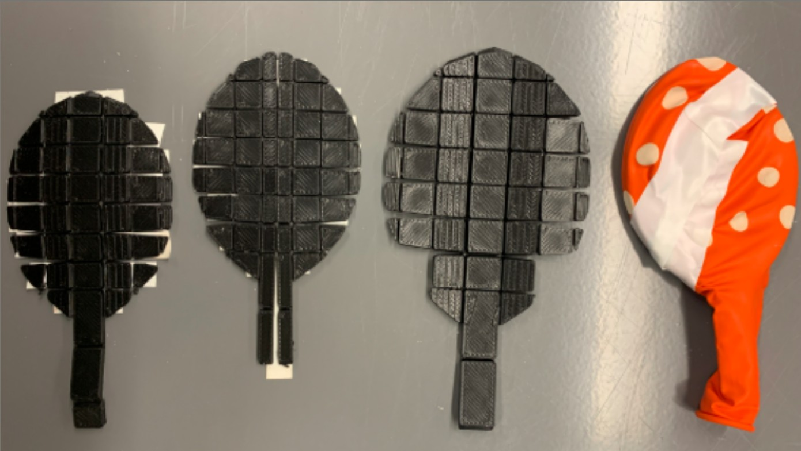
However, through experimentation, we realized that the nearly parallel surface area was what encouraged actuation by vacuum, not the small gaps seen in early iterations. Through many iterations of spines and tests of their bending capabilities with a vacuum, the angular tooth structure was refined into angled ridges spaced out on a thin, bendable strip.
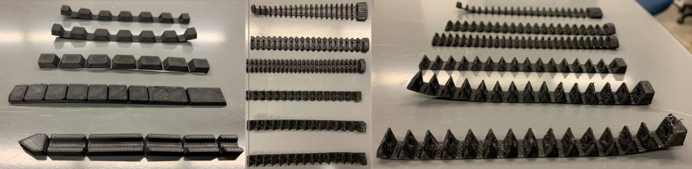
In order to get the desired flower-like appearance, the structure was made as thin as possible while still being actuatable. Without multimodal actuation, the spine needed to spring naturally back into position to be able to open with the vacuum on and close when off. The length also needed to fit within the standard-sized balloons without too much tension when inserted, i.e., without stretching the balloon. The thickness of the base strip and the height, angle, and spacing of the ridges were varied to program the bending behavior of the structure. Increasing the height, spacing, and angle relative to the base strip would consistently increase the amount of bending possible with the same amount of vacuum pressure. Increasing the thickness decreased the amount of bending by vacuum actuation, but the increased stiffness allowed the spine to return to its original shape more easily. The experimental results were sufficient to conclude that the parallel surface area was the most prominent factor in determining the amount of bending by vacuum actuation. Thus, by changing the surface areas the vacuum acted on in each segment, the bending behavior could be easily programmed.
Below are the spine iterations and resulting bending with a vacuum pressure of 5 Pa. eight is the length from the base strip to the ridge tips. The vertex angle is the angle of the ridges from the tip. The thickness is the thickness of the base strip.
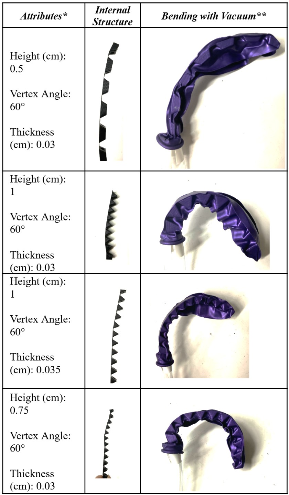
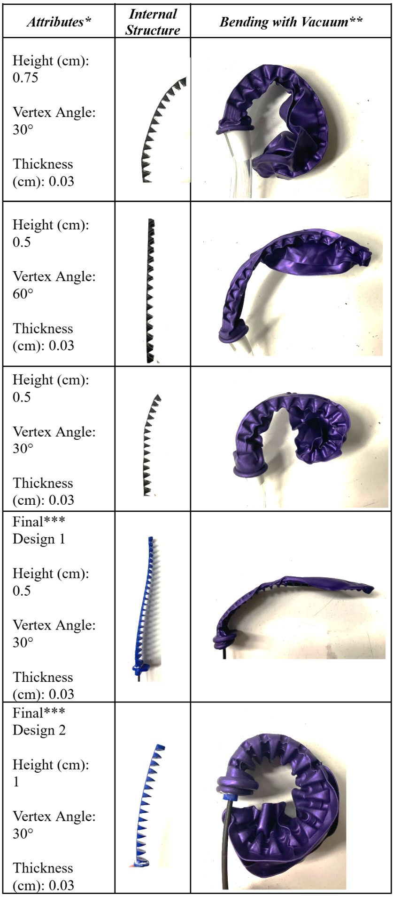
In the end, the final assembly used the two petal designs: half of the petals with a height of 0.5 cm would bloom minimally, and the other half with a height of 1 cm would bloom greatly to better serve the tabletop demonstration aspect of the project.
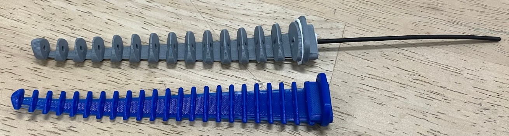
The morphing behavior is enabled by pneumatic robotic actuation, where the alarm sound wirelessly triggers the blooming of the flower. The semi-rigid interior petal structures have ridges to create voids and rigid surfaces for vacuum forces to act on when covered by airtight bladders. The interior petal structure was 3D printed from PLA to be inserted into latex balloon bladders. The stiffness of the PLA allowed the petal spines to spring back into a closed position when released from the vacuum.
Since the spine needed to be printed flat on the print bed, a separate piece larger than the balloon opening was designed to press fit onto the bottom of the spine to seal the balloon, leaving only a single opening. Heat shrink tubing inserted into the petal openings was used as small airtight channels connecting to a maniforld that connects to the main vacuum intake tube. The PLA press fits were not airtight, so a latex sealant was used to fill in gaps to ensure the vacuum was providing adequate actuation forces in the petals.
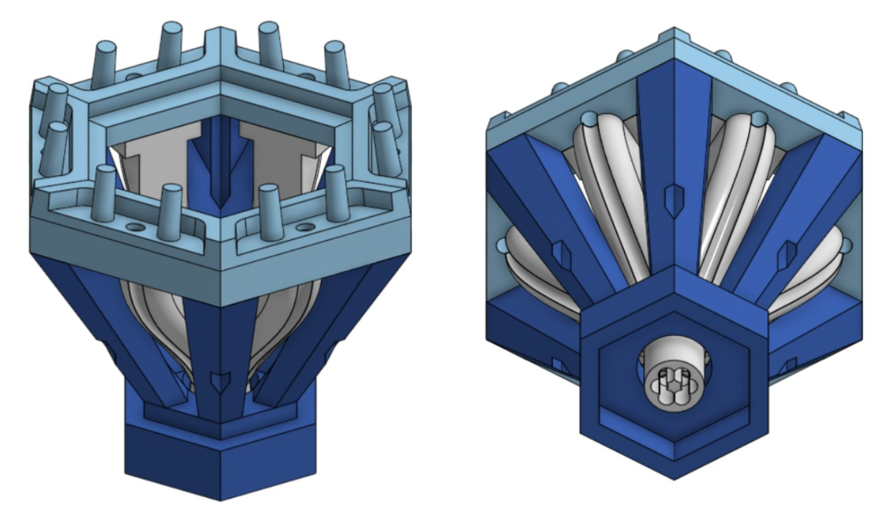
Holes were also added running through the ridges of the spines to allow for easier air evacuation as the balloons close around the spines.
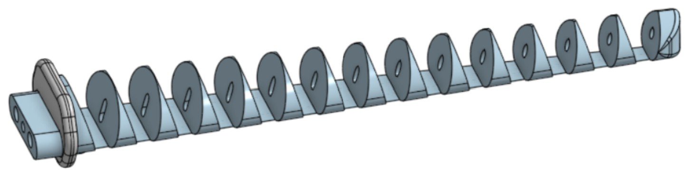
The software is implemented as a finite-state machine. Two primary states are implemented: a listening state where the microcontroller continuously samples the analog microphone input and a triggered state where the vacuum is activated, the LEDs are turned on, and the microcontroller suspends further audio analysis. The system transitions back to the listening state when a pushbutton is pressed.
The system uses a dual-voltage power architecture to safely support both logic-level electronics and higher-power loads. The Arduino and signal-processing components operate at low voltage (5 V), while the pneumatic vacuum and LED system operate from a 12V supply. A common ground is shared between the logic and power domains to ensure proper signal referencing, particularly for MOSFET gate control.
An analog microphone module is connected to the Arduino’s analog input and continuously samples ambient sound. The microphone signal is digitized and processed using a Fast Fourier Transform (FFT) in real time. This software-based frequency detection provides noise immunity compared to simple amplitude thresholding. Upon detection of an alarm, the array of yellow LED lights (two parallel branches of 3 LEDs in series with a current limiting resistor) and a 12V pneumatic vacuum pump are turned on. The pump and LEDS are switched using a logic-level N-channel MOSFET in a low-side configuration. A gate resistor limits transient currents, a pull-down resistor ensures the pump remains off during reset, and a Schottky 1N5822 acts as a flyback diode across the pump to protect the circuit from inductive voltage spikes. Finally, a push button input is connected to allow the user to manually reset the system, returning it to the listening state.
The morphing flower alarm is a realization of how pneumatic, vacuum-actuated mechanisms can be visually integrated with bio-inspired elements, programmable light fixtures, and be full of accessibility potential. The created product can morph in response to an auditory alarm, combining wireless communication with vacuum actuation for a practical use. With additional time, the spine’s resting shape could be more inward-curved and have realistic flower-like motions. The current mechanism design could also be easily adjusted to allow for variable bending amounts along the length and in multiple directions to achieve more real or interesting curvatures. Multimodal actuation could be implemented with the current design by mirroring the spine structure and separating the bladders, controlling the vacuuming to bend in either direction.
Advanced multimodal actuation could be achieved by connecting more bladders with structures to bend in at least three independent directions. In this implementation, the air pressure would act as the connecting string, similar to a cable-driven tentacle.
Overall, the alarm establishes a foundation for further breakthroughs in multimodal, visual display systems. The vacuum actuation allows more mechanical programmability in bending behavior, as the surface area in each segment determines its relative curvature based on the vacuum pressure. Likewise, each segment could be designed to bend to specific degrees, a higher level of control that is more complex to achieve with simple cable-pulling.
Experimental design • Product Design • Mechanical testing • C Programming • Electronic Circuit Design and Assembly • Design Iterations • Pnuematics
Email: jennifersili@berkeley.edu
LinkedIn: linkedin.com/in/jennifersili